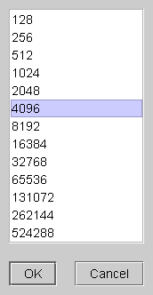
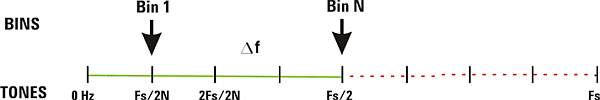
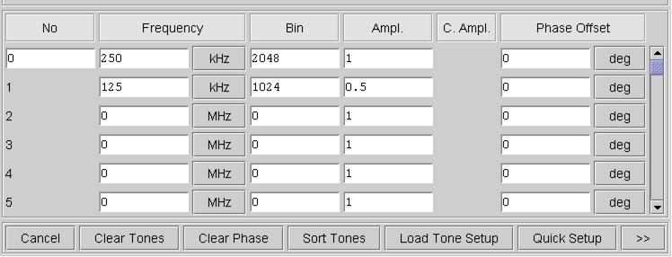

Selecting the Value of N
You can either select the value of N from the pull-down list which you get by clicking the button right to the entry field, or enter the value of N directly in the entry field.
Due to the inverse FFT algorithm used to calculate the waveform in the time domain, the value of N must be a power of two.

With your selection of N, you define two key specifications of the multitone waveform:
- The number of points (samples) of the multitone waveform to be generated in the time domain, which will be twice the value of N (that is, 2*N)
- The number of frequency bins in the frequency range 0 Hz to Fs/2. Each frequency bin from bin 1 to bin N represents one tone that can be selected to appear in the multitone waveform. That is, with the value of N you set the resolution for the tone definition. Note that by selecting the highest bin N, the associated tone frequency is Fs/2. With the given sample frequency Fs, the distance between two adjacent tones becomes Df = Fs/(2N)
The following illustrates the frequency bins and the associated tones defined by N=8.

As can be seen in the above figure, the maximum tone frequency of the multitone waveform is Fs/2, corresponding to the bin N.
The bottom area of the Multitone Generation dialog window lets you define the individual tones in the multitone waveform. You can also load tone definitions you have created before.
